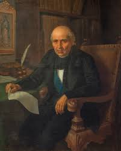
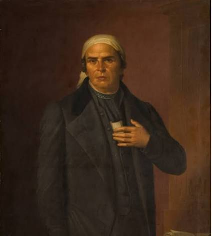

"Padre de la Patria" , dio el Grito de Dolores la madrugada del 16 de septiembre de 1810 para llamar a la rebelión.

Sacerdote y líder militar apodado el "Siervo de la Nación", redactó el documento político Sentimientos de la Nación.
